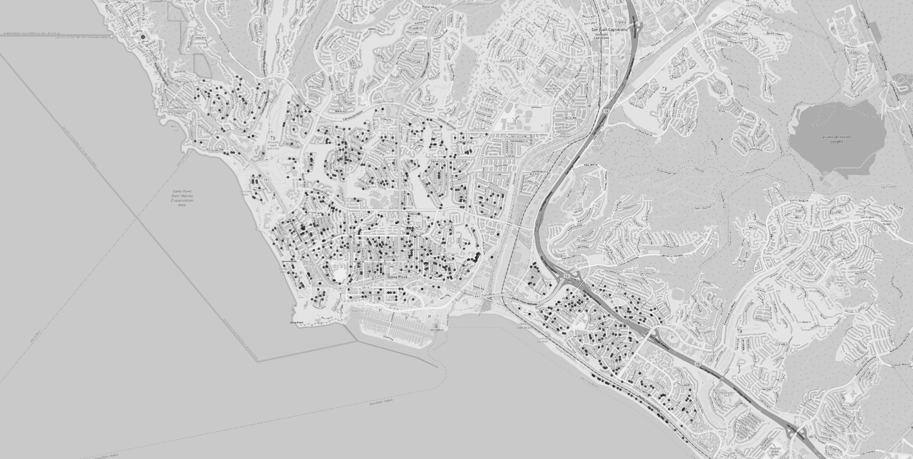
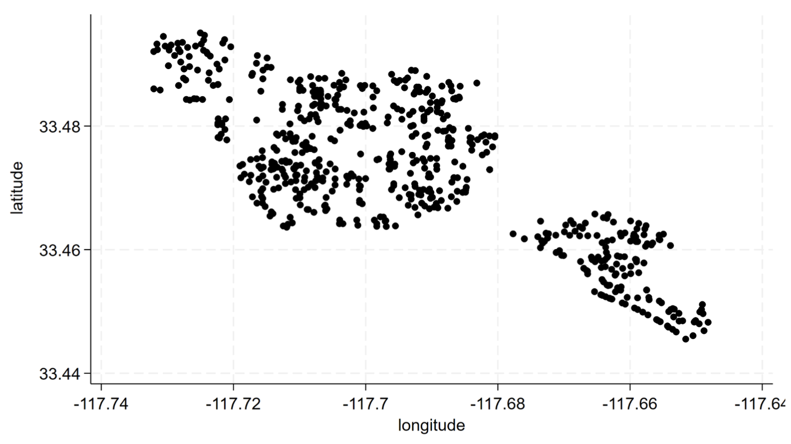
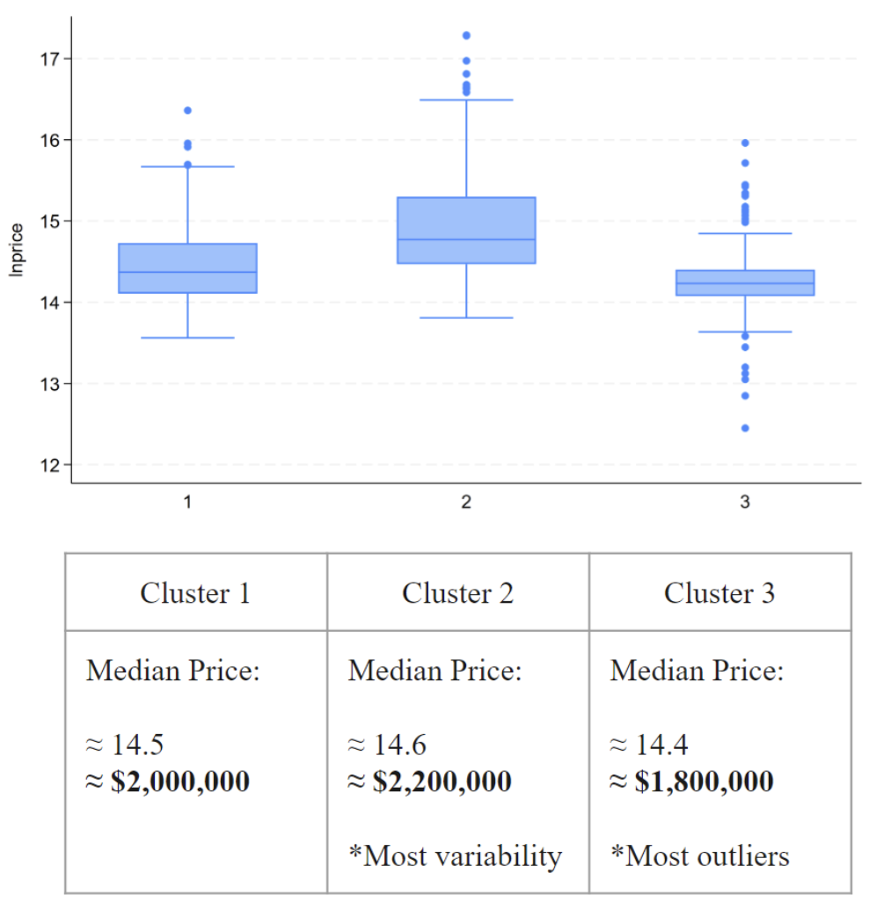
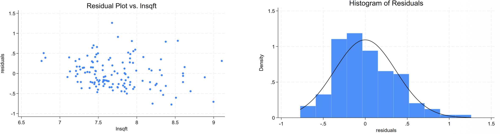

×
Spatial econometrics build separating structure, micro-location premia, and spillover effects. Uses clustering + IV + spatial autoregression and a logit classifier to stress-test drivers of pricing beyond standard hedonic controls.
lndist_pch) behaves like a location premium and becomes stronger under spatial correction.Metrics are reported for model comparison and diagnostic clarity (not a “forecast product” claim).
Three control blocks are used: main structure controls, time controls, and spatial controls. Tables below mirror the original outputs but are rendered natively so your site doesn’t look like a screenshot museum.
| Variable | Obs | Mean | Std. Dev. | Min | Max |
|---|---|---|---|---|---|
| house id | 620 | 310.5 | 179.123 | 1 | 620 |
| price | 620 | 2,875,487.4 | 3,175,359 | 380,000 | 32,000,000 |
| sqft | 620 | 2,554.19 | 1,391.416 | 799 | 13,777 |
| lot sqft | 620 | 8,877.553 | 21,439.874 | 1,000 | 304,920 |
| beds | 620 | 3.556 | 0.916 | 2 | 9 |
| baths | 620 | 2.585 | 1.151 | 1 | 10 |
| stories | 620 | 1.731 | 0.591 | 1 | 3 |
| parking | 620 | 2.25 | 0.689 | 1 | 8 |
| single family | 620 | 0.905 | 0.294 | 0 | 1 |
| condo | 620 | 0.044 | 0.204 | 0 | 1 |
| townhomes | 620 | 0.035 | 0.185 | 0 | 1 |
| duplex triplex | 620 | 0.016 | 0.126 | 0 | 1 |
| zipcode | 620 | 92627.742 | 2.171 | 92624 | 92629 |
| year built | 620 | 1980.776 | 16.465 | 1928 | 2023 |
| house by year | 620 | 627,925.91 | 362,230.01 | 2,022 | 1,254,260 |
| Variable | Obs | Mean | Std. Dev. | Min | Max |
|---|---|---|---|---|---|
| time | 620 | 753.721 | 10.194 | 739 | 772 |
| year=2021 | 620 | 0.232 | 0.423 | 0 | 1 |
| year=2022 | 620 | 0.318 | 0.466 | 0 | 1 |
| year=2023 | 620 | 0.335 | 0.473 | 0 | 1 |
| year=2024 | 620 | 0.115 | 0.319 | 0 | 1 |
| month dummies (1–12) | Included as indicator controls (means range ~0.053–0.113). | ||||
| Variable | Obs | Mean | Std. Dev. | Min | Max |
|---|---|---|---|---|---|
| dist_pch | 620 | 0.025 | 0.011 | 0.004 | 0.055 |
| latitude | 620 | 33.473 | 0.012 | 33.445 | 33.495 |
| longitude | 620 | -117.693 | 0.022 | -117.732 | -117.648 |
| kmeans cluster | 620 | 2.087 | 0.764 | 1 | 3 |
| std kmeans cluster | 620 | 1.979 | 0.724 | 1 | 3 |
| int complete cluster | 619 | 63.99 | 69.144 | 1 | 244 |
| int ward cluster | 619 | 135.008 | 123.454 | 1 | 393 |



The goal is to estimate structural and location effects while correcting for spatial dependence and endogeneity. This specification is treated as the primary “pricing” model.
| Term | Coef | Std. Err | z | P>z | 95% CI |
|---|---|---|---|---|---|
| lnsqft | 1.052 | 0.174 | 6.060 | 0.000 | [0.712, 1.392] |
| beds | -0.043 | 0.029 | -1.490 | 0.136 | [-0.101, 0.014] |
| baths | 0.091 | 0.033 | 2.800 | 0.005 | [0.027, 0.155] |
| lndist_pch | 0.424 | 0.039 | 10.780 | 0.000 | [0.347, 0.501] |
| stories | -0.134 | 0.036 | -3.680 | 0.000 | [-0.205, -0.062] |
| single_family | 0.112 | 0.050 | 2.220 | 0.026 | [0.013, 0.211] |
| year=2022 | 0.154 | 0.042 | 3.630 | 0.000 | [0.071, 0.237] |
| year=2023 | 0.199 | 0.040 | 4.920 | 0.000 | [0.120, 0.278] |
| year=2024 | 0.235 | 0.059 | 3.960 | 0.000 | [0.119, 0.352] |
| std_kmeans_cluster=2 | -0.337 | 0.036 | -9.440 | 0.000 | [-0.407, -0.267] |
| std_kmeans_cluster=3 | -0.277 | 0.036 | -7.660 | 0.000 | [-0.348, -0.206] |
| Constant | 8.079 | 1.225 | 6.590 | 0.000 | [5.678, 10.480] |
Interpretation (tight):
(1) Size dominates (lnsqft ≈ 1.05), consistent with a multiplicative scaling of price with interior area.
(2) Location premium is strong (lndist_pch positive and highly significant), and becomes especially clean under spatial correction.
(3) Cluster effects are economically large, consistent with micro-market segmentation that isn’t captured by basic covariates.
This model treats a price-state indicator as the target and tests whether structure + location + clusters reliably separate regimes. The purpose is diagnostic: “does the feature set actually separate outcomes cleanly?”
| Term | Coef | Std. Err | t | p | 95% CI | Sig |
|---|---|---|---|---|---|---|
| sqft | 0.002 | 0.000 | 7.61 | 0.000 | [0.001, 0.002] | *** |
| beds | -0.288 | 0.251 | -1.14 | 0.253 | [-0.780, 0.205] | |
| baths | 0.927 | 0.282 | 3.29 | 0.001 | [0.375, 1.479] | *** |
| stories | -1.295 | 0.361 | -3.58 | 0.000 | [-2.003, -0.587] | *** |
| single_family | 1.612 | 1.071 | 1.51 | 0.132 | [-0.487, 3.711] | |
| dist_pch | 61.788 | 20.044 | 3.08 | 0.002 | [22.502, 101.073] | *** |
| ClusterID=2 | 1.030 | 0.432 | 2.38 | 0.017 | [0.183, 1.878] | ** |
| ClusterID=3 | -0.611 | 0.500 | -1.22 | 0.222 | [-1.590, 0.369] | |
| Constant | -10.773 | 1.817 | -5.93 | 0.000 | [-14.334, -7.212] | *** |
Interpretation (tight):
(1) Size and bathrooms drive regime separation strongly. (2) dist_pch is economically meaningful in classification, not just in continuous pricing.
(3) Clusters matter, consistent with submarket structure that is not fully reducible to raw coordinates.
| Metric | Value | Notes |
|---|---|---|
| Correctly classified | 90.48% | Threshold: Pr(D) ≥ 0.5 |
| Sensitivity | 74.84% | Pr(+ | D) |
| Specificity | 95.70% | Pr(- | ~D) |
| PPV | 85.29% | Pr(D | +) |
| NPV | 91.94% | Pr(~D | -) |
Residual diagnostics are used to sanity-check fit, tail behavior, and whether structure-only modeling leaves spatial patterns behind.
